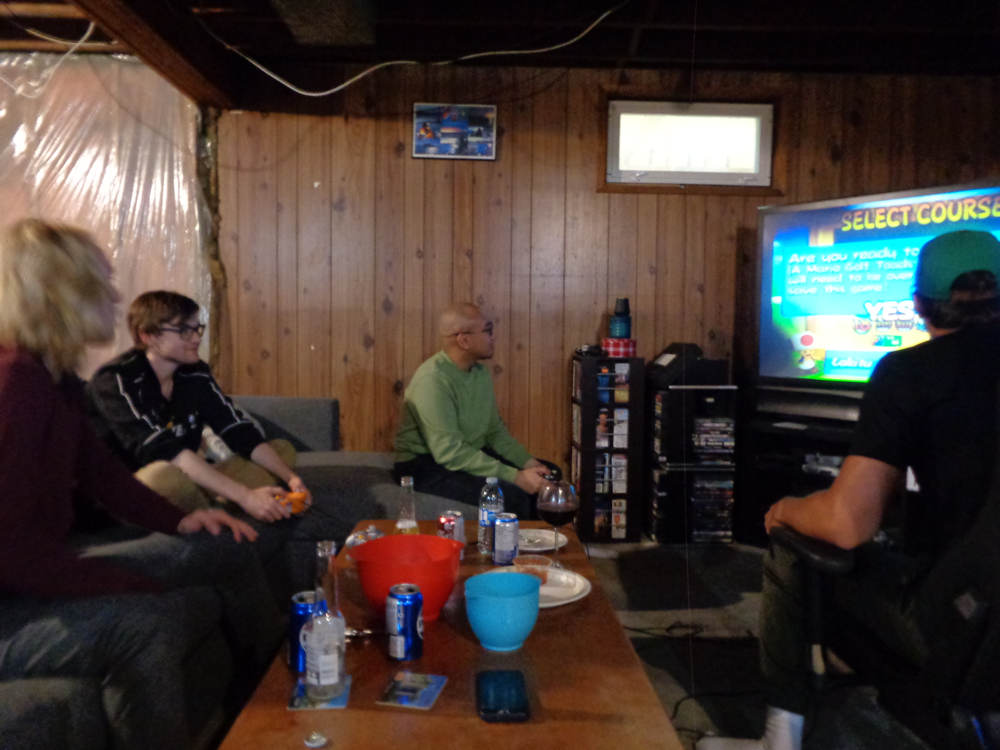

I enjoy taking on problems as they bring opportunities to
experiment and learn new solutions. This is prominent in my
passion with software development and web design.
From learning new languages, being flexible with different tools
and software, developing and building strategies with other
programmers, improving the customer and user experience by
brainstorming and testing solutions for the everyday user, and
improving my problem solving skills along with my abstract
thinking and reasoning. I am always willing to challenge myself
towards new opportunities and experiences, with the goal of
innovating and moving the industry forward.
Started as a freelance graphic designer and video editor in 2018,
I created graphics, gaming content, and user branding for content
creators on Twitch and YouTube. Currently I'm taking the
Application Development and Delivery course from Red River
College Polytechnic. Actively building my knowledge in Software
Development, Web Development, and Front-End and Back-End
systems, and enhancing projects I work on using my experience
from designing layouts and interfaces in graphic design.
